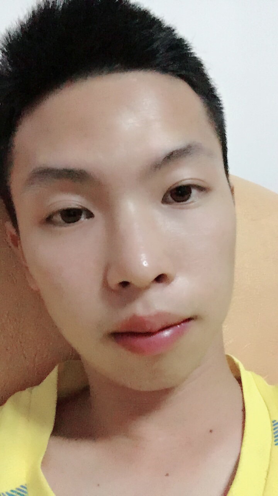
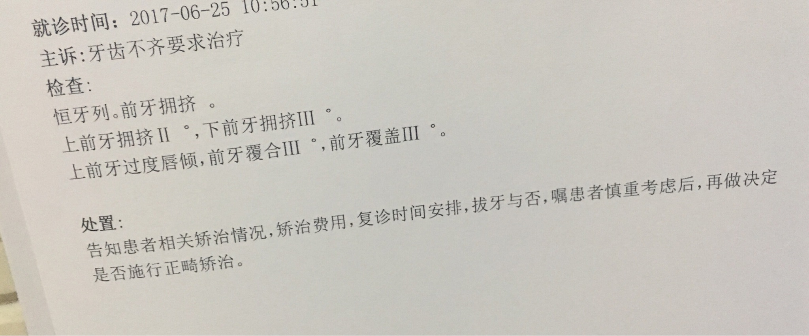
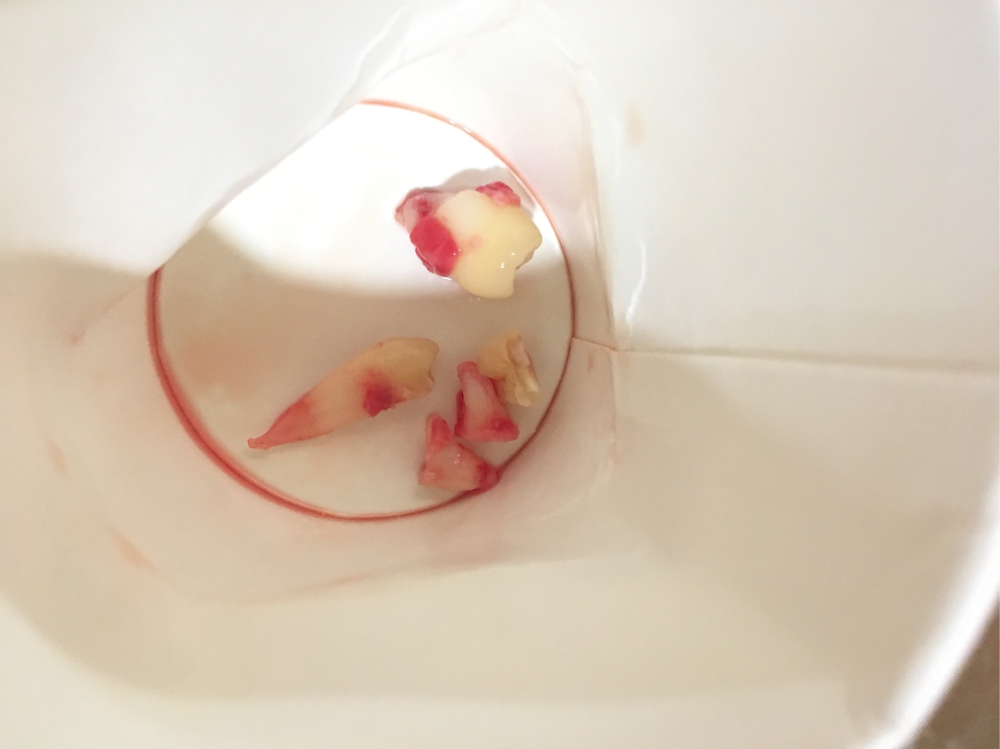
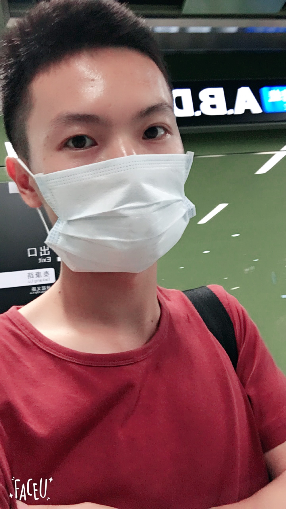
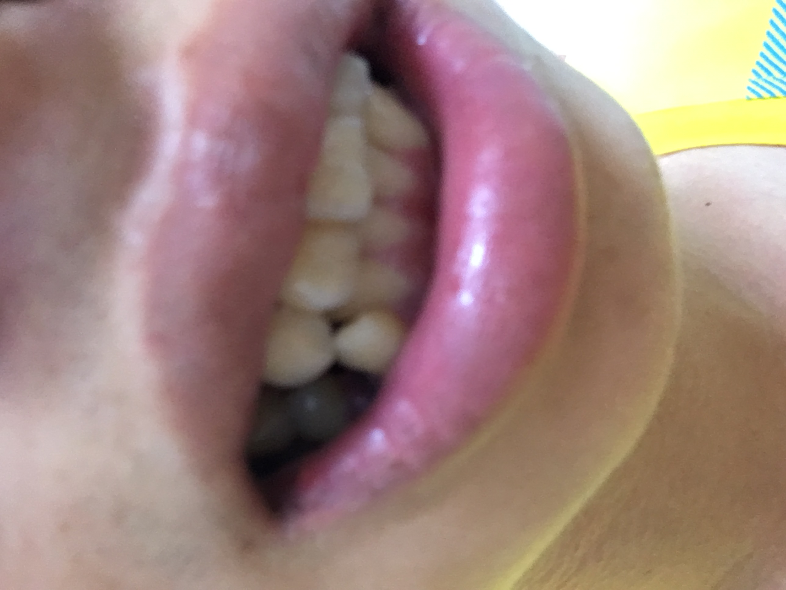
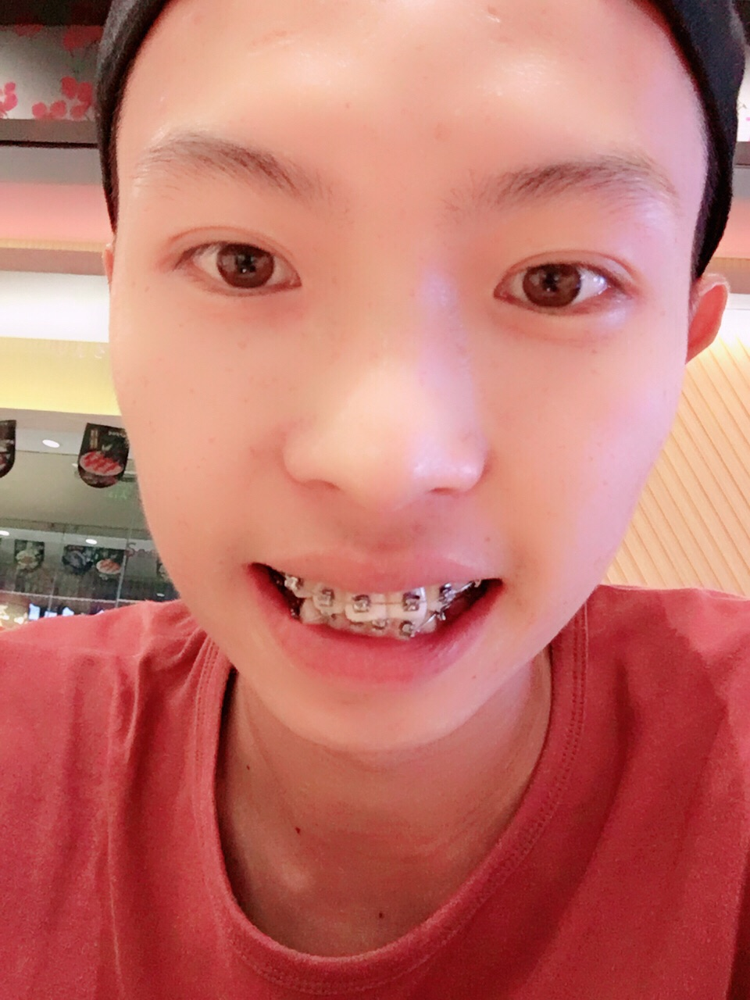
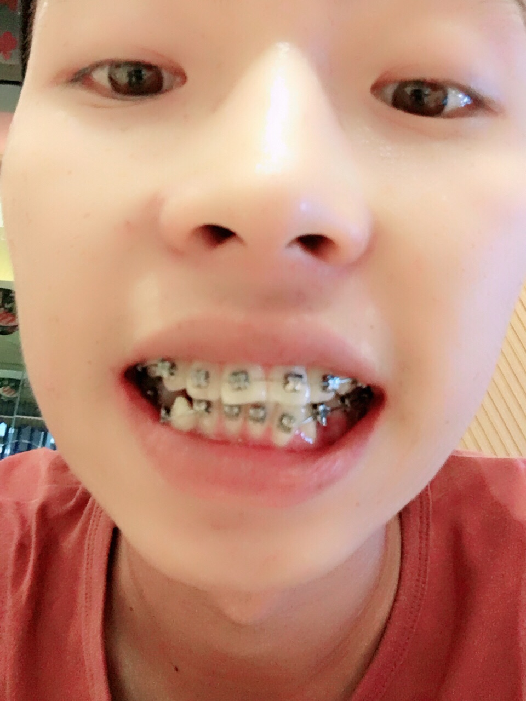
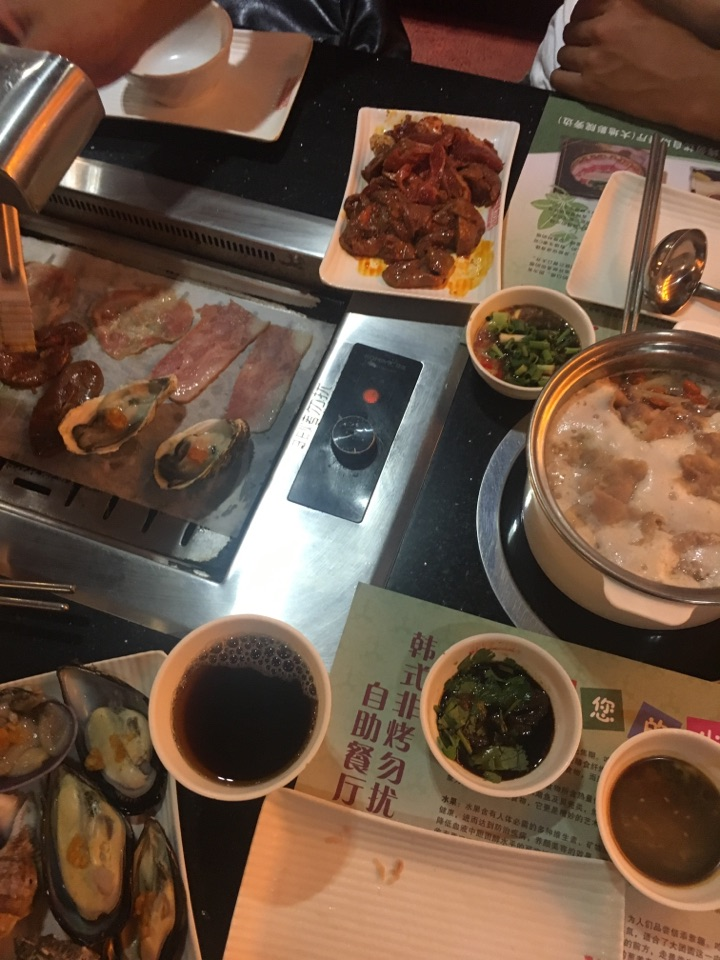

更新于9.21
等了好久，终于鼓起勇气，去正畸了。
本人94年的boy
in guangzhou
下方高能，请大家照顾自己或者退出

-----------------------------
6月25日，坚决去诊断，被告知要先拔掉7颗牙齿，本人本身就因为某些原因（杂牙）拔掉了一颗虎牙，后悔莫及

----------------------------------
这次是拔牙，7月12日，这一天去了省口腔医院，排队的人实在是太多了，结果还没到我，口外的号已经挂完了，心里想，不可以就这样浪费时间，然后我就跑到海珠广场去挂号了，幸好这次挂上了。突然想到张小姐写的文章，等下拔完牙一定会很难看，于是就在旁边的药店买了包口罩还有纸巾。时间真的是紧啊，刚买完，上去5楼就开始在乎我的名字了，然后我就马上就进去了，当时医生还是算亲切的，稍微缓解了我的情绪，这次我是过来先把半边的拔掉的，接下来就躺倒手术台上了，先上来的是麻醉，说实话打麻醉蛮痛的，当时拼了命闭上眼睛，以致于有点泪水出来了。打完之后，稍微休息了两三分钟等药效出来，半个嘴巴都麻了，于是就开始重头戏了，拔的是左边两颗智齿和左下虎牙后面的一颗牙齿，其实感觉还是蛮大工程的，主要是智齿还没有长出来，是完全被肉包着的，所以要把肉切开，害怕，当时拔完智齿后缝了几针，哈哈哈哈，真心佩服自己，大概用了十来分钟三科牙齿拔完了，
嘴巴这个时候还是麻的，医生叫我咬住棉花，根本感觉不到。下了手术台，用镜子看了自己的脸，超心痛自己的，然后我就带上口罩走出医院了。在回家的路上，麻药的效果还没有过去，嘴巴的口水流到脖子才开始有知觉，用手摸了下，一滩血水，惊恐，纸巾用上了，解决了尴尬的场面。
我感觉回去的大巴上坐在我旁边的中年大叔有点被我的样子吓到了，当时口水还没来得及整理好，以致于又流到脖子上，然后他盯了我半天，尴尬。到家后妈妈已经帮我煲好了粥，幸福，幸福。麻药的效果逐渐褪去，所谓的副作用来了，感觉有点发烧的症状，上头了，不过吃过粥，好像就没事了。
晚上刚好有聚会，于是我就去赴约了，真的是糟糕，当天晚上在k房由于拔完智齿的缘故，一度很难张嘴，哈哈哈哈哈，实在是煎熬，慢慢的感觉脸开始有点肿起来，后来坚持了很久，终于受不了了，回家了，当时应该开始真的有点发烧了，回去后稍微洗漱，就睡了。
第二天，起来后感觉有点怕冷，有点乏力。应该是牙龈发炎的缘故吧，于是就断断续续的过了一天了。
先更新到这里，有新情况再更。。
-----------------------------------
7月17日，迎来了第二次拔牙，鉴于上次拔牙的伤势恢复情况已经到六七成，于是就决定乘胜追击.
吸取上次在总院排长龙的教训，这次我直接就奔去海珠广场的分院去挂号，果然不出我所料，顺利地挂上了.
首先挂完号直奔四楼，开诊后，没等多久就呼我的名字了.
迎接我的是位女医生，见面时有股温柔气息扑面而来（幻觉），然而接下来却并没有所谓的温柔.
首先上来的依然是麻醉，天啊，救命啊，*-*这次我要拔的是右边的牙齿（两颗正畸牙，两颗还没出头的智齿），实话说，即使是有过一次经验，但是仍然超痛的，超痛，超痛，冷汗直冒，还夹杂着苦涩的药水味，n次想要吐了
经过一番激烈的战斗，我终于幸存下来了，
当天晚上直接开始肿痛到睡不着，来颗止痛药算了，喉咙痛到炸掉了，每个咽哽，都像在吞针，痛，痛，痛

下次应该是上套了吧，还是说要加上打骨钉
悲伤瞬间溢流成河……
-------------------------------
7月31日，七月份的尾巴，八月份的前奏，终于开始上矫正的牙套了，可是这次上的只是矫正大牙的牙套，哎，看了这条路还要走很远，加油
今天是9月13日，原定计划是8月30日那天去复诊的，经过了蛮多事情的忙碌，终于在今天去复检了，这次的复诊调整一下后面大牙的松紧度，不过医生说我可以上牙套了，当时超兴奋的，但是由于之前没有想到进度会这么快，于是这次请的假时间不够，加上其他的一些原因，没有续到假，哎，所以就只能预约就近的方便的时间了，不过超nice的护士姐姐帮我选了个挺近又方便的时间，真心感谢
9.17今日按时到医院复诊去了，很早就开始赶过去了，然而才刚刚赶上，今天没什么人复诊
，感觉气氛还是蛮舒适的，护士真的好贴心，在来的路上还提醒我这次复诊。9点钟进去诊室，直到差不多12点才结束，两个多小时的复诊，嘴巴都干裂脱皮了，被长时间撑开，实在是有点脱皮干燥粗糙。刚上完牙套没什么异常的感觉，直到下午就感觉到牙齿开始有点酸酸的痛，前排的牙齿一碰就痛，剩下的两边幸好还能吃饭，途中真心感谢医生和护士对我的温柔，谢谢手下留情，幸好仍然在我能忍受的程度之中，真是万幸

可以看出我的中线是相当不齐的，门牙已经偏到一边去了
9.21，真的很奇怪，前两天，我就单单纯粹地站着，结果莫名其妙就听到“beng”的一声从嘴巴里传出来，刚开始还以为自己开锁了，后来发现不对劲，用舌头舔了一下，发现活动的，当时就想崩溃，才上了牙套没两天，怎么会就掉了呢，好怀疑医生的做功又或者自己的饮食习惯，但是我已经尽量避免吃硬的食物了呀，难道是和我喝热粥有关系吗，真的是奇了怪了，满脑子都是黑人问号，后来打电话预约了时间，也就是今天了。
一早就奔到医院去了，原来有人比我早到的，等到十点左右终于轮到我了，上去没多久就粘上去了，感觉开锁的时候有点小痛，但是还好，当时心情还是蛮愉快的。谁知道愉快的我在附近吃了个寿司，吃着吃着又听到来自上帝的声音，“beng”的一声，omg，又掉了一个，心都碎了一地，幸好没有走太远，当时十二点半左右，打诊室的电话，打了n遍，无人应答，吃饭重要，还是先把饭吃完，后来没预约上，我直接就去医院了，直接在候诊室等待着，然而这个时候帮我上牙套的医生从诊室了出来了，惊奇的她看到亮眼的我（帽子亮眼），我也对她挥挥手示意，寒暄了两句，等到两点开诊，就带上病历本进去找医生去了，耐心的医生，表示很尴尬，但还是帮我粘上去了，而且这次的意外没有收我的手续费，其实蛮开心的
这两天口腔溃疡加上牙套的钢丝扎嘴，实在是难受，今天就借助看医生的时间，出来大开吃戒，狂补这几天少吃的东西，管他的口腔溃疡